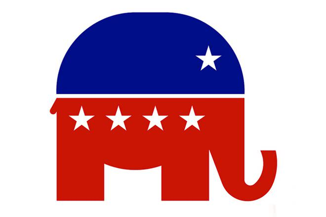
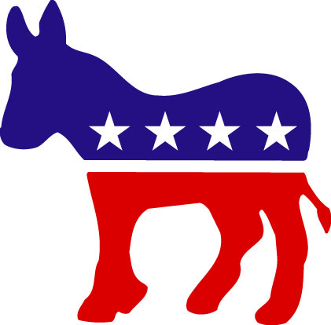

Which Party are you? This Party's platform involves support for free market capitalism, free enterprise, business, a strong national defense, deregulation, restrictions on labor unions, social-conservative policies (particularly opposition to abortion and same-sex marriage), and traditional values, usually with a Judeo-Christian ethical foundation. Once dominant in the North-East and the Midwest, the party's core support now comes from the South and the Mountain West, as well as Catholics and conservative evangelicals across the country. Click to see the party!
You're republican! Click here to hide her again.
Now for our second party. The party's philosophy of modern liberalism advocates social and economic equality, along with the welfare state. It pursues a mixed economy by providing government intervention and regulation in the economy.These interventions, such as the introduction of social programs, support for labor unions, moves toward universal health care and equal opportunity, consumer protection, and environmental protection form the core of the party's economic policy. Click to see which party this is!
You're a democrat! Click here to hide the donkey again.
Here's some information for when you're old enough. The U.S. system is designed to resist change. Deadlock is built in the design except in times of overwhelming majority. The party platforms are good illustrations of the parties' basic principles and policy priorities. Pay attention to what they include, do not include, and how they prioritize issues. Notice health care is much higher in the democratic platforms. Budget issues are higher in the republican ones. We have the phrase "party ticket" because you used to vote for slates of candidates committed to the "platform." The parties exist to make things easier for you to understand. A lot of people disparage them, but it's impossible for single individuals to independently govern. You have to have organizations; these are more important that the individual on most issues.